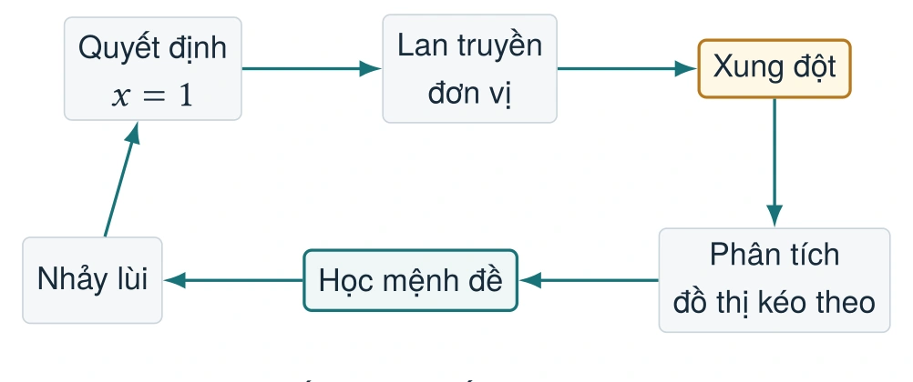
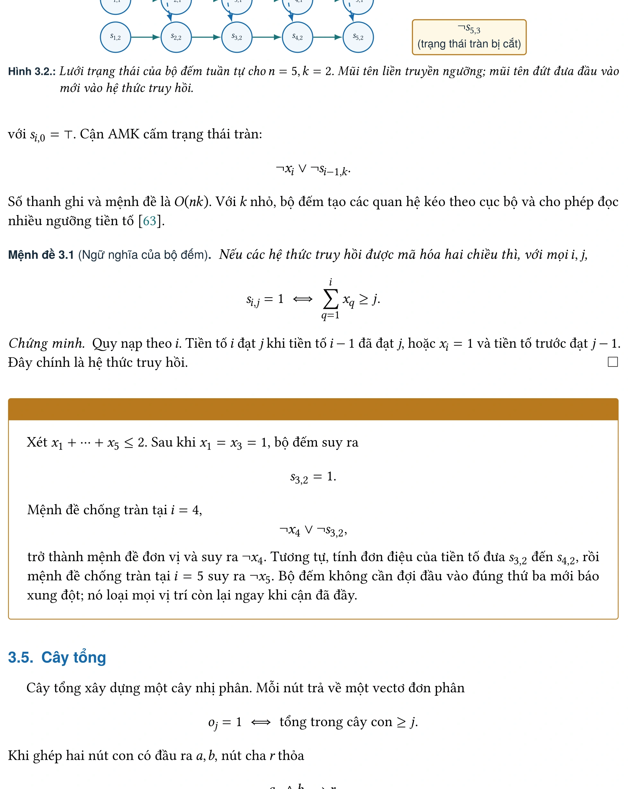
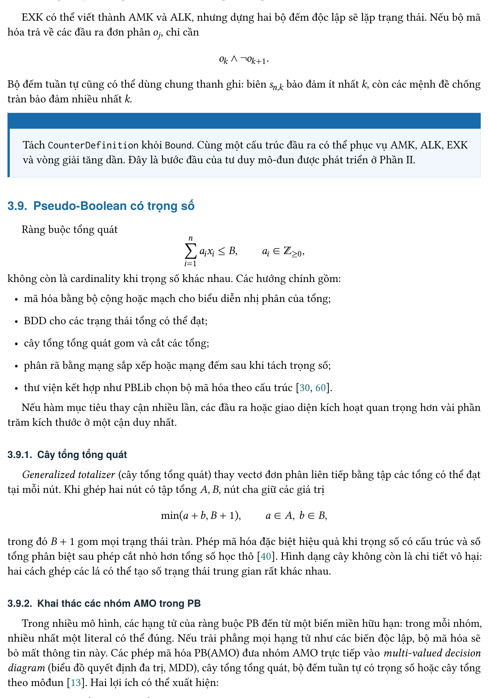
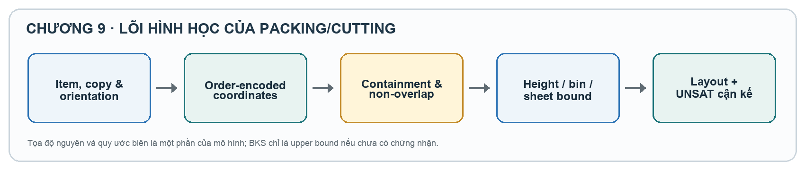

Chuyên khảo Khoa học · Ấn bản 2026
Biểu diễn SAT tối ưu cho các bài toán tối ưu hóa tổ hợp
Nghiên cứu nguyên lý thiết kế, tái sử dụng cấu trúc bộ đếm và ứng dụng phép mã hóa SAT (SAT encoding) trong các miền bài toán tối ưu hóa tổ hợp thực tế.

Cấu trúc chuyên khảo
Chuyên khảo gồm 12 chương được chia thành 3 phần trọng tâm, trình bày từ cơ sở lý thuyết logic đến nguyên lý thiết kế và 4 miền ứng dụng thực tiễn.
Phần I · Nền tảng và tiêu chí thiết kế
Chương 1 – 4
-
CHƯƠNG 1SAT và MaxSAT như một nền tảng giải chính xácTổng quan về mô hình miền, chuyển đổi Tseitin sang CNF, thuật toán CDCL (gán đơn vị, học mệnh đề, quay lùi), kiến trúc giải MaxSAT (core-guided, model-based), thư viện PySAT và cơ chế chứng nhận nghiệm bằng bằng chứng DRAT.
-
CHƯƠNG 2Thế nào là một phép mã hóa SAT tốt?Hệ thống hóa các tiêu chí đánh giá phép mã hóa: tính đúng ngữ nghĩa theo phép chiếu, khả năng lan truyền đơn vị (GAC và GAC-like), sự đánh đổi giữa số biến/mệnh đề phụ với khả năng suy luận của bộ giải, và thiết kế giao diện ghép mô-đun.
-
CHƯƠNG 3Bộ công cụ ràng buộc đếm và giả BooleanKhảo sát các họ mã hóa ràng buộc đếm (AMO, EXO, AMK, ALK) và giả Boolean (PB): từ mã hóa cặp (Pairwise), mã hóa nhị phân (Bitwise), bộ đếm tuần tự (Sequential Counter), Cây tổng cân bằng, Mạng sắp xếp Batcher đến cấu trúc PB/GTE.
-
CHƯƠNG 4Thiết kế thực nghiệm cho phép mã hóa SATQuy trình thực nghiệm chuẩn hóa cho phép mã hóa SAT: nguyên tắc chọn bộ kiểm chuẩn đại diện, cấu hình solver (Minisat, Glucose, CaDiCaL, RC2), thước đo thời gian CPU/PAR-2, biểu đồ xương rồng, biểu đồ phân tán và chuỗi truy vết thực nghiệm.
Phần II · Tái sử dụng cấu trúc trong phép mã hóa SAT
Chương 5 – 7
-
CHƯƠNG 5Bộ đếm dùng chung cho các cửa sổ chồng lấnThiết kế bộ đếm dùng chung (Shared Counter) cho chuỗi ràng buộc đếm chồng lấn (Sequence constraint). Phương pháp phân hoạch khối chuỗi Boolean giúp tái sử dụng trạng thái đếm cục bộ giữa các cửa sổ kề nhau, giảm đáng kể số biến và mệnh đề phụ.
-
CHƯƠNG 6Thanh ghi đếm thích nghi cho ràng buộc đúng KKiến trúc thanh ghi đếm thích nghi (NSC - New Sequential Counter) cho ràng buộc đếm Exactly-K. Phân tích miền trạng thái tam giác khả đạt và lập hệ thức truy hồi ngưỡng để loại bỏ các ô đếm bất khả, đạt số biến và mệnh đề tối ưu.
-
CHƯƠNG 7Đối xứng, biến quan hệ và liên kết biểu diễnPhương pháp phá đối xứng Lexicographic (LEX), khai thác biến quan hệ làm chứng chỉ biểu diễn cho tập tọa độ, và kỹ thuật liên kết biểu diễn hai chiều (Channeling) giữa các miền biến khác nhau nhằm kích hoạt tối đa đường lan truyền đơn vị.
Phần III · Các họ bài toán tối ưu tổ hợp
Chương 8 – 12
-
CHƯƠNG 8Lập lịch và cân bằng dây chuyềnMã hóa bài toán lập lịch công việc và tài nguyên: so sánh biểu diễn mốc thời gian (order/support) với vị trí công việc, ứng dụng trong lập lịch y tế (NSP), xếp lịch tàu hỏa, RCPSP và giải thuật phân rã miền động (DDD) cho MaxSAT.
-
CHƯƠNG 9Đóng gói và cắt hai chiềuMã hóa bài toán xếp hình và đóng gói 2D: biểu diễn quan hệ vị trí không chồng lấn giữa các vật thể hình chữ nhật, ứng dụng trong 2D Strip Packing, 2D Bin Packing, Cắt thanh kim loại nguyên chiếc và so sánh kiến trúc xếp chồng vs không xếp chồng.
-
CHƯƠNG 10Bandwidth, antibandwidth và tô đa màuMã hóa các bài toán khoảng cách nhãn trên đồ thị: xây dựng ma trận khoảng cấm cho Cyclic Antibandwidth (CABP), Bandwidth Coloring Problem (BCP) và phương pháp phân rã cửa sổ cấm trên các họ đồ thị cấu trúc đặc biệt.
-
CHƯƠNG 11Gán nhãn và phân bổ tần sốMã hóa bài toán phân bổ tài nguyên tần số radio (FAP) và gán nhãn Radio Labeling: kỹ thuật nén khoảng cấm liên tục thành hai literal biên và gán nhãn k-safe trên đồ thị để đảm bảo khoảng cách an toàn chống nhiễu sóng.
-
CHƯƠNG 12Kết luận và chương trình nghiên cứuTổng kết bốn nguyên lý thiết kế phép mã hóa SAT hiệu quả, hệ thống hóa bản đồ bằng chứng thực nghiệm của nhóm tác giả và đề xuất các chương trình nghiên cứu phát triển mở rộng trong tương lai.
Hình minh họa kỹ thuật tiêu biểu
Các hình minh họa trong chuyên khảo được dựng nguyên bản bằng TikZ trong mã nguồn LaTeX, mô phỏng trực quan các cấu trúc đếm và luồng dữ liệu.

Hình 1.3 · Sơ đồ vòng lặp CDCL trong bộ giải SAT
Luồng xử lý từ gán đơn vị, phát hiện xung đột, phân tích xung đột đến học mệnh đề và quay lùi không thứ tự trong solver.

Hình 3.2 · Lưới trạng thái bộ đếm tuần tự (Sequential Counter)
Ma trận biến phụ tích lũy và các đường lan truyền ngưỡng trong mã hóa ràng buộc đếm AMK.

Hình 5.3 · Bộ đếm dùng chung (Shared Counter)
Phân hoạch khối và kỹ thuật tái sử dụng trạng thái đếm cục bộ giữa các cửa sổ Sequence kề nhau.

Hình 9.2 · Bố trí nguyên & Quan hệ tách trong Đóng gói 2D
Biểu diễn quan hệ không chồng lấn giữa các vật thể hình chữ nhật bằng các literal quan hệ chứng minh.
Thông tin trích dẫn
Vui lòng sử dụng trích dẫn bên dưới khi tham chiếu đến nội dung chuyên khảo trong các công trình nghiên cứu khoa học.
Tô Văn Khánh, Kiều Văn Tuyên, Trương Xuân Hiếu, Vũ Thanh Hương, Đào Xuân Nghĩa, Nguyễn Kim Trung Đức (2026).
Biểu diễn SAT tối ưu cho các bài toán tối ưu hóa tổ hợp. Ấn bản 2026. SATLab, Khoa Công nghệ Thông tin, Trường Đại học Công nghệ, Đại học Quốc gia Hà Nội.
@book{satbook2026,
title = {Biểu diễn SAT tối ưu cho các bài toán tối ưu hóa tổ hợp},
author = {Tô, Văn Khánh và Kiều, Văn Tuyên và Trương, Xuân Hiếu và Vũ, Thanh Hương và Đào, Xuân Nghĩa và Nguyễn, Kim Trung Đức},
year = {2026},
publisher = {SATLab, Khoa Công nghệ Thông tin, Trường Đại học Công nghệ, ĐHQGHN},
note = {Ấn bản 2026},
url = {https://satlab-uet.github.io/sat-book/}
}